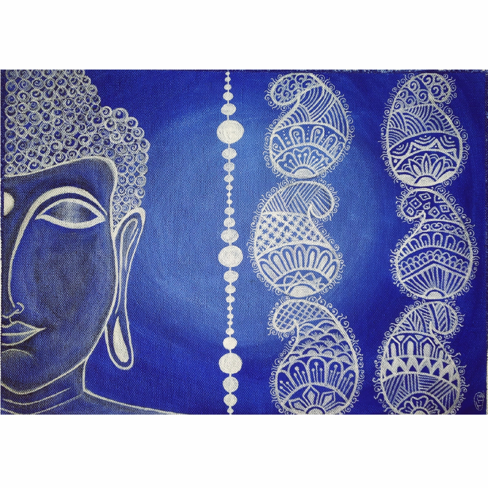

BUDDHA FACE PAINTING
In frame is a beautiful buddha half face painting. Buddha is a meditator and a believer in peace.
so this is a painting that is showing peace and harmony.
it is a very simple but at the same time very attractive looking painting.
The background colour is giving a very cool or soothing effect to the painting.
one half of the painting has buddha face and the other hald has some mandala designs .
Materials Required :
Canvas of (16*14) inch.
paint brush.
Light violet, white acrylic colours.
steps one can follow(if needed) :
First take a plain canvas and tape it if you want a border or else paint the whole canvas light violet.
While doing that remember to keep the brush strokes in round format and start painting dark from outer part and make it light towards
centre by mixing littlewhite with violet.
After that let it dry. Then make the outline of buddha face.
Then start shading the face with little white and black.
Then on the other side of the face , one can do any type of design with white paint.